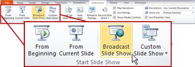

If you have PowerPoint 2010 and a hosted broadcast service provided by your organization, you can broadcast a slide show of your own. A Windows Live ID can be used with the Microsoft PowerPoint Broadcast Service in PowerPoint 2013 and later.
To broadcast your own slide show, do the following:
Open PowerPoint.
Important: You must have PowerPoint 2010 or later to use this feature.
Open the slide show that you want to broadcast.
On the Slide Show tab, in the Start Slide Show group, click Broadcast Slide Show.
